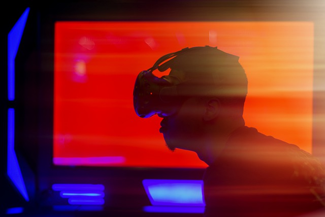
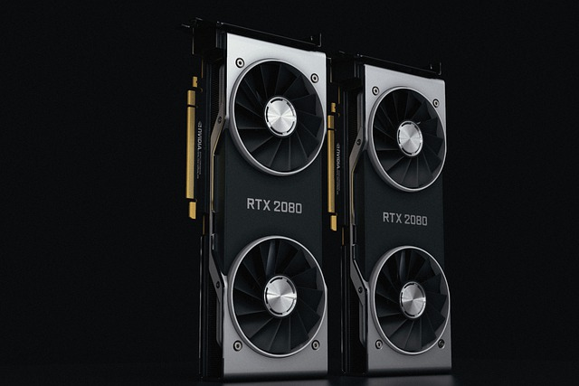
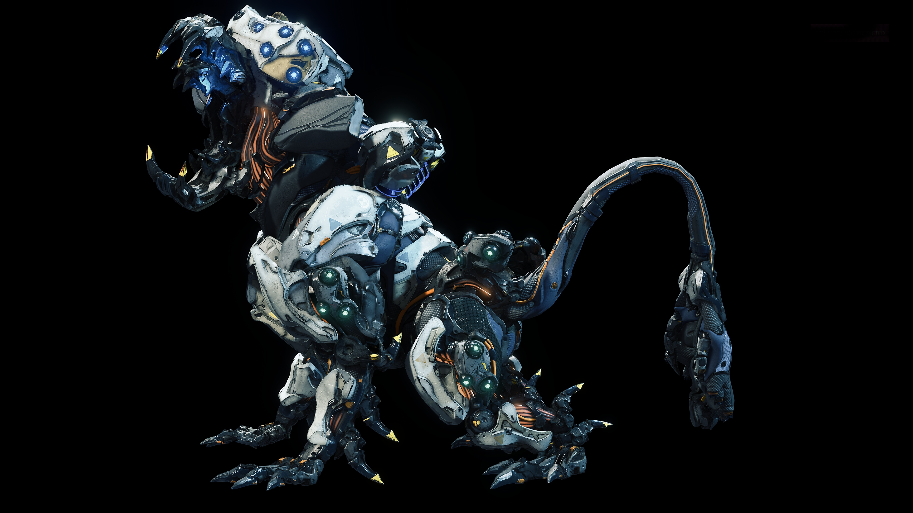
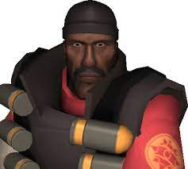
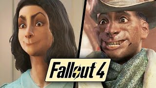

Gaming
I play a variety of games, mostly open world games and shooter games. Vr games also have a special place for me, Vr games that are designed for VR are the most fun experiences. Some of my personal favorite games and games I'm playing right now are:
- Horizon Forbidden West: This game came out a few weeks ago, and its already one of my favorite games. This game is a follow up to the game Horizon zero dawn, which itself was such a good story game, forbidden west expands the universe of the game with so much detail. The game is so much fun.

- Team Fortress 2: This has been my favorite shooter game for almost a decade for me. I've played team fortress 2 since middle school, which for some people is not long at all considering team fortress 2’s life span. Unfortunately, team fortress 2 is one of those dying shooter games, but it's so much better than any modern shooter.

- Fallout 4: this was my first actual story game I ever bought and played for myself. I loved it. This game might not be the best fallout in the series, but for me it was amazing, and I did not even fully complete it the first time. But it was so fun that I went back again, and again, till even this year I started playing a modded run, its been so fun.
